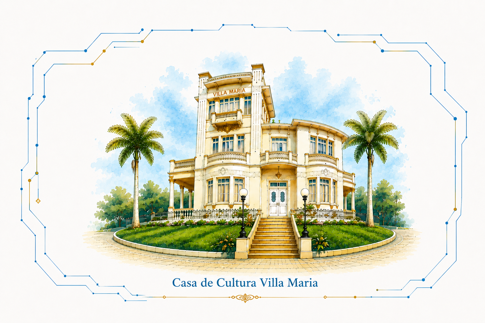
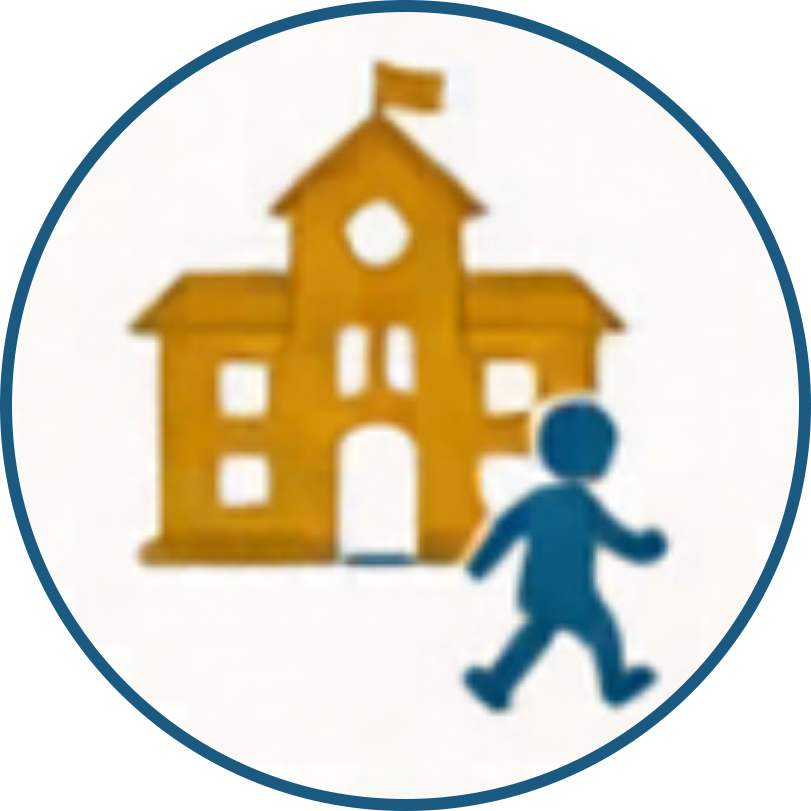
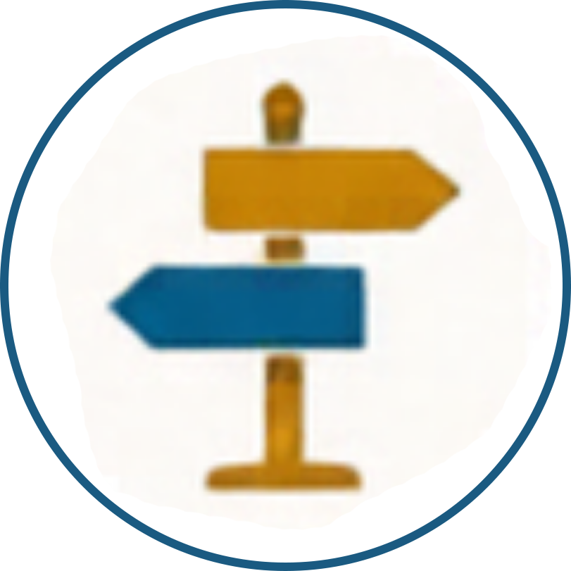
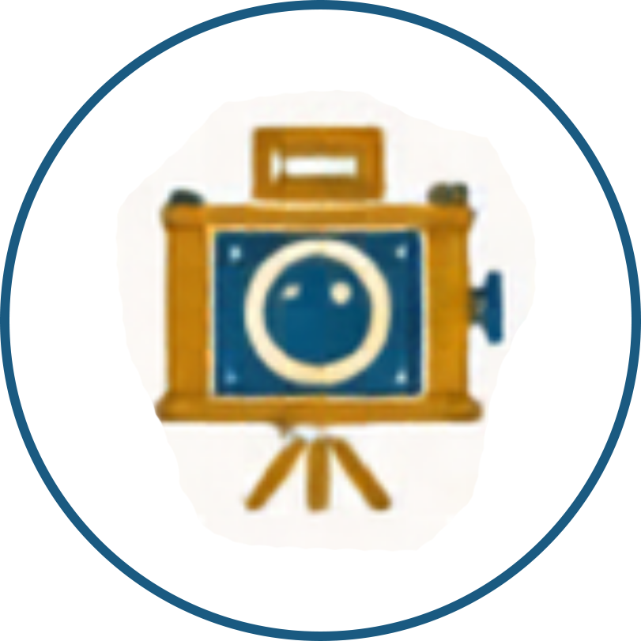

Ana Márcia 2026




ℹ️
Como Navegar
×
🖱️ Mouse
Roda do mouse para zoom e arraste para rolar
📱 Tela Touch
Swipe / Pinça para zoom e arraste pro lado para ver
⌨️ Teclado (Setas)
Use as setas (← ↑ → ↓) para navegar no mapa
⌨️ Teclado / Botões
Teclas [+] e [-] ou botões na tela para zoom
+
−
×
Título do Recurso
Descrição do recurso.
×
❮
1 / 15
❯